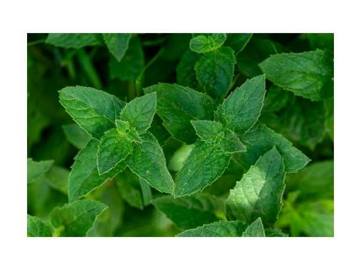

Mentha arvensis
Common Names: Mint, Field Mint, Corn Mint, Wild Mint
Local Name: Pudina (Tamil/Hindi)
Family: Lamiaceae
Origin: Europe, Asia; widely cultivated worldwide
Plant Type: Perennial aromatic herb
Average Lifespan: Perennial; spreads via runners
| Growth Habit | Spreading herb; spreads aggressively via underground stolons |
| Plant Size | 20–60 cm tall |
| Leaves | Ovate, serrated, aromatic; bright green; strong menthol scent |
| Flowers | Small, pale purple to white; in whorled clusters along stem |
| Root System | Shallow, spreading stolons; invasive if not contained |
| Climate | Tropical to temperate; prefers cool, moist conditions |
| Temperature Range | 15–30°C; tolerates mild frost |
| Soil Type | Moist, fertile loamy soil; rich in organic matter |
| Soil pH Preference | 6.0–7.0 |
| Sun Requirement | Partial shade to full sun; afternoon shade in hot climates |
| Water Requirement | Moderate to high; keep consistently moist |
| Can it Grow in Pots? | Yes; recommended to contain its spreading habit |
| Fertilizer Schedule | Monthly with compost; avoid excess nitrogen |
| Pruning Time | Harvest regularly; cut back after flowering to encourage fresh growth |
| Common Pests | Aphids, spider mites, mint rust |
| Propagation by Cuttings | Stem cuttings root easily in water or moist soil; division of runners also works |
| Digestive Health | Used for indigestion, nausea, and IBS; menthol has antispasmodic properties |
| Immune Support | Antibacterial and antiviral properties; used for colds and respiratory conditions |
Disclaimer: Information provided is for educational purposes only and not a substitute for medical advice.
Add your field observations here.